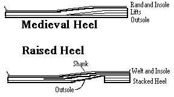
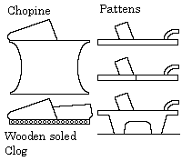
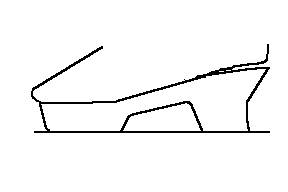
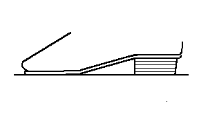

The easy, and accurate, response to this topic is that throughout the Medieval and

Renaissance periods, in Europe and most likely elsewhere, shoes were made without raised heels. Whether this is because heels had not yet come into fashion, or because the technology had not been developed is a matter of some debate. The technology for building either stacked heels with pegs and/or sewing had been around since the Roman era in different applications, and the "covered-platform" method using a "rand" or platform cover strip, which evolved into the Chopine and covered wood heels, had been around on over shoes (trippe) since at least the 13th c. On the other hand, there are a number of examples of layered heels, called "spring heels" in modern parlance, where everything between the insole and the outsole of a turned-welt shoe was built up with one or two wedges of leather, or where the difference between levels was more gradual, more resembling a thickened back-part than a true heel. Even at the best of times, the spring heel never approached even the minimum height differences between heel and forepart in modern footwear with raised heels. There are also Medieval shoes too, in which the repair of the heel section made it thicker, or where the heel section was reinforced after making by additional bits and pieces (according to Swann). But the spring heel was about as good as it would get, until the first real heel makes a tentative appearance in Western Europe in the later 16th c..The more complex response involves an examination of the technology involved, the two totally conflicting traditions regarding the development of the heel, some intriguing archeological material, and some simple hypotheses.
The technology of the heel is fairly straight forward specific, since to support a raised heel, the waist of the sole requires support. Otherwise, the sole leather will be unable to support the bridging span between the heel and the toe and you are just going to wind up with a collapsed sole.. This support is, today, often a piece of steel called a "shank" that rests between the treadline and the heel breast. Apparently such shank-pieces were originally developed as early as the Romans, just prevent the sole from flexing except at the treadline across the joints of the foot. Soles that flex all over fatigue the foot. These first shanks were heavy leather or wood shank-pieces. I do not know of any examples of turn-welts with shank-pieces, but there are apparently leather/wood shank-piece in 75% or more of 18th century and later Turnshoes.1

There are several conflicting traditions regarding the origin of the raised heel. The first is that heeled shoes ultimately derive from the Venetian Zoccoli (also known as Chopines, Shopines, Chapany's and so on), which in turn probably derived from the cork-soled or wooden-soled overshoes and pattens.
Chopines appear first in Venice in the 1400s, and the style appears to have centered on the aristocratic ladies and the the courtesans. The style gradually spread across the continent, reaching England by 1589. They became fairly common throughout Europe, but the really exaggerated styles were not seen in England.2 The truly extreme examples of the style reached upwards of 2'. 3
Along with chopines came cork soled shoes. This refers to shoes made with any
covered cork platform inserted above the sole. The actual sole walked upon was leather as
usual. Arnold describes the most common as having cork running the whole length of the
foot, including any heel wedges, and then soled in leather. This probably kept the cork
platform from eroding or compressing too quickly.4
With Cork shoes, came shoes with arches. These were "slack heel" shoes

(appearing c.1580-1610). Swann says that when "heels" were first introduced, they had not fully developed a way to seam the upper to the sole all the way around, and so left the last few inches around the heel unstitched and loose.5According to legend, these high shoes were first introduced by Catherine de Medici when she became Queen of France, because she was sensitive about her lack of height. It is more reasonable that there was some previous development of the shoe that the Queen merely made famous or popular in Northern Europe.6
Another, older and no longer popular tradition, more linked to costumers than shoe historians, suggests that heels came from the east with the Mongol/Tatar tribesmen, who used them for riding.

It is arguable that true raised heels might have existed in Russia and the East in the 14th Century, or were developed there later. There is a reference to shoes made in a Belone fashion in 1601, in the notes of Queen Elizabeth's shoemakers, apparently making a reference to the Polish design of stacked leather heels that is later in the century referred to as Palony/Polony fashion..7
Sigmund von Huberstein [pg. 41] speaks of boots with "...raised heels.." with "...studs that act as spurs..." in 1557, but all the illustrations in this book show heel-less examples of a well-known Slavic form.8 There is a verse letter by Tuberville, first published 1587, which says: "...the heels they underlay with clouting clamps [sic for "clumps"?] of steel...", which could refer to steel shanks, or simply steel armor.9 There is also a description of steel shanks and stacked heels dating from the "14th century" in the Novgorod digs10, although I must admit to concern over the translations here since steel shanks otherwise don't appear until c1880.
Finally, there are reports I've head of Turkish/Persian miniatures and paintings that show clearly raised heels, but I have not been able to find any of these myself. Furthermore, Swann places these in the 2nd half 16th c. and so contemporary with the developments in Western Europe. Clearly I need to do more research here.
Another possibility is that the stacked leather heels derived from the practice of spring heels mentioned above. There is some question why someone would want to make shoes that look like they have heavily repaired soles, while on the other hand, perhaps they realized from the repaired soles that there were benefits to be found in stacking layers of heels. But without real, solid evidence, this is just blind speculation.
In response to this general question, though, it has been suggested, by D.A. Saguto, Master Cordwainer at Colonial Williamsburg, and international expert on the history of shoemaking, that there might be a third option that joins the two above mentioned major traditions. While chopines, cork platform-shoes "with arches", etc. may indeed be the origins of women's and men's covered-heels c.1590-1610, high-leg men's riding boots with stacked leather heels above the sole may possibly derive from the Hussars and "barbarous" Muscovites so fascinating to Westerners in the 16th c. In short, that there might be one source for women's heels and an all together different one for men's. Clearly men's and women's heel techniques begin to diverge shortly after about 1600 with men's tending more towards high stacked leather on top of the outsole and women's remaining largely covered wood, setting the standards followed right down to the present.
Much of men's fashion was deriving increasingly from "foreign" military dress, and the Hussars were certainly an influential band of ethnic warriors--witness all the "pseudo-Hussar" regiments raised in everybody's armies in the West during the 17th c. The Polish (i.e., "polony" heel), which we think was stacked leather on top of the outsole may well tie this up, and is an early example of Eastern/Slavic fashion derivations.
Even so, there is no solid evidence that definite heels existed anywhere before c.1550-50, even in the East (if we overlook the dating of the boots in Novgorod).
Return to Contents
Footwear of the Middle Ages - Raised Heels, Copyright � 1999 I. Marc
Carlson.
This page is given for the free exchange of information, provided the author's name is
included in all future revisions, and no money change hands, other than as expressed in
the Copyright Page.